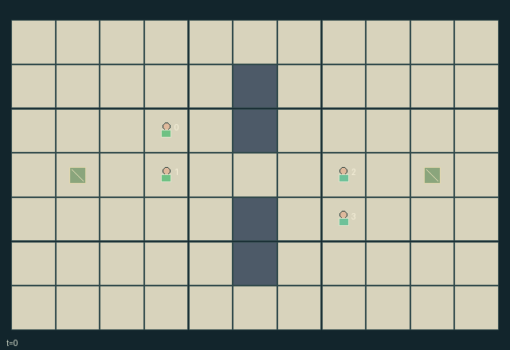

GI177 · Tag Exchange

Each controlled pair captures the opposing flag while preserving its own flag at home, coordinating tags, rescue, handoff and finite recharge.
Identity and original contract
4 independently actionable roles; 11 discrete commands per role; 135 native observation columns per role; original horizon 96 steps. Declared per-step reward range: -1.0 to 1.0. Observation regime: fully_observable.
Source SHA-256: 12a058e28bdb121dfe6afffc3eb56e0dabaafcc872f2fbc5938da1a3a84c5355
The objective, rewards, population, map and horizon remain original. A preview is not a success claim.
Objective and gameplay
Each controlled pair captures the opposing flag while preserving its own flag at home, coordinating tags, rescue, handoff and finite recharge.
A tag temporarily removes an opponent movement/interaction opportunities and drops possession. An adjacent teammate can pay for early rescue, or receive a handed flag and finish the route. Team depot recharge is finite and contested by teammates.
- Two controlled pairs oppose each other. Move on public floor; co-location, crossing and swaps are allowed. Walls leave middle and outer routes.
- Tag at distance at most one after movement: nearest free enemy, then lower index. Each successful attacker spends one energy; simultaneous mutual tags both land.
- A new tag freezes for three ticks and drops carried flag. Frozen players can wait or spend two energy to thaw. Natural timer expiry is free.
- An untagged free teammate may spend one energy to rescue an adjacent frozen player. Fresh same-tick tags cannot be rescued; release changes the next action boundary.
- At an exact flag cell, interact to return your own displaced flag or pick up the enemy flag. Contested pickup resolves by lower actor index.
- Pass a carried flag to your adjacent free teammate. Scoring requires enemy flag at your own exact base and your own flag home; scored enemy flag returns home.
- Recharge near your own base draws from its finite four-unit depot. No energy or depot stock regenerates automatically.
- Two captures terminate the episode. Each capture rewards both scoring teammates +1 and both opponents -1.
Ending: Either team reaches two captures. H=96 otherwise truncates; no scripted pursuer or automatic policy participates.
What this game explores
Commitment, exchange & governance: Promises consume time, liquidity, access or material. Separate an announced agreement from a binding commitment and from its eventual delivery; log cancellation and expiry too.
Joint transport & shared access: Positions, load geometry, occupancy and persistent access constrain whose action can succeed next. Distinguish physical handoff, shared controls and simultaneous force from a cosmetic cooperation label.
Team opposition & interception: Cooperation within a team can coexist with opposition between teams. Preserve team membership, capture and possession rules, and report each team's outcomes instead of assuming a single shared return.
Survival, protection & rescue: Protection and repair alter another role's future feasible actions. Record losses, exposure, rescue and infrastructure as well as delivery; survival is determined by the actual kernel.
These are questions supported by rule structure, not observed learning effects.
Play it: operating walkthrough
crucibles play --game gi177Keep Python running and open its printed address. Select this game, set a seed and press Create session. The game itself is always English.
Assign a role range to Host with Assign / take over, or Assign all roles. Invite a second participant with Create player invitation, then assign a disjoint subset. Every original role is available.
For every owned role choose a legal command and press Queue. Arrow keys / WASD queue a declared directional action for the current role camera when available. Space or Advance one joint step advances everyone together. Non-directional games use the selectors.
Unqueued roles use the labelled untrained uniform-legal policy. Take over or release roles before the next step without resetting. Full-state debug is privileged and permanently logged; role cameras preserve permissions. Close the session to retain logs. Server restart does not restore sessions.
Complete command reference
IDs and English labels exactly match the manifest. Availability depends on role, resources, location and phase. An available action can still have no productive effect.
0·wait
1·north
2·east
3·south
4·west
5·tag enemy attempt
6·rescue teammate attempt
7·pickup enemy or return own flag
8·pass flag to teammate
9·draw finite depot energy
10·spend two energy to self-thaw
Roles and capability identifiers
These original role names describe capabilities, not interchangeable skins. Check each owned role's legal selector before planning handoffs.
agent_0·team 0 player 0
agent_1·team 0 player 1
agent_2·team 1 player 2
agent_3·team 1 player 3
Information and observation permissions
All dynamic strategic state is public and encoded: map, positions, teams, energy, frozen timers, flag possession, depot stock, scores and tag/rescue/pass/score events. All entity visibility masks are true; own identity/team labels distinguish the controlled perspective.
The GIF is full-state debug and may reveal hidden entities or private state. Train on obs[agent], not the picture, state tree or another role's private row. Field slices and visibility are in the original manifest.
Reinforcement-learning integration
import jax
from crucibles_jaxmarl import make
env = make("gi177")
key = jax.random.PRNGKey(0)
key, rk, ak, sk = jax.random.split(key, 4)
obs, state = jax.jit(env.reset)(rk)
actions = env.sample_actions(ak, state)
obs, state, rewards, dones, info = jax.jit(env.step_env)(sk, state, actions)
done = dones["__all__"]Observations are float32 vectors of width 135; actions are scalar int32; masks have 11 entries. Supply all 4 roles each transition. Masked sampling is an engineering reference, not a trained learner.
step_env retains terminal data without reset. step performs outer autoreset and keeps terminal data in info["raw_state"] and info["raw_observation"]. Use dones["__all__"] for episode boundaries; separate completion, failure and time limit in analysis.
JIT or vmap equal identities and shapes. Split independent reset, policy and transition keys. Group different shapes explicitly; do not shrink the population or horizon. Host rendering stays outside training.
Training questions and fair evaluation
Define valid completion from the objective before fitting. Preserve original rewards and also report real deliveries/services, losses, resource state, unresolved episodes and per-role returns. Animation is not a reward signal.
Promises consume time, liquidity, access or material. Separate an announced agreement from a binding commitment and from its eventual delivery; log cancellation and expiry too.
Positions, load geometry, occupancy and persistent access constrain whose action can succeed next. Distinguish physical handoff, shared controls and simultaneous force from a cosmetic cooperation label.
Cooperation within a team can coexist with opposition between teams. Preserve team membership, capture and possession rules, and report each team's outcomes instead of assuming a single shared return.
Protection and repair alter another role's future feasible actions. Record losses, exposure, rescue and infrastructure as well as delivery; survival is determined by the actual kernel.
Compare memory, communication or centralized critics under matched actor information. Declare critic access; keep actor inputs role-filtered. Match partner/opponent distributions, masks, compute and checkpoint selection. Final tests never enter fitting or selection.
Independent training runs or source-pairing blocks are inferential units; episodes from one policy are not independent training replications. Save hashes, keys, versions, device, time and cost. Negative, zero, failed and indeterminate outcomes are valid. No trained checkpoint or target score is supplied.
Classification and evidence
Overlapping editorial labels are reading aids, not proof of novelty, difficulty, strategic equivalence or learning effects.
- Commitment, exchange & governance
- Evidence
scene.rules.3: An untagged free teammate may spend one energy to rescue an adjacent frozen player. Fresh same-tick tags cannot be rescued; release changes the next action boundary.
- Joint transport & shared access
- Evidence
scene.rules.0: Two controlled pairs oppose each other. Move on public floor; co-location, crossing and swaps are allowed. Walls leave middle and outer routes.
- Evidence
scene.rules.2: A new tag freezes for three ticks and drops carried flag. Frozen players can wait or spend two energy to thaw. Natural timer expiry is free.
- Evidence
scene.rules.5: Pass a carried flag to your adjacent free teammate. Scoring requires enemy flag at your own exact base and your own flag home; scored enemy flag returns home.
- Team opposition & interception
- Evidence
manifest.task.objective: Each controlled pair captures the opposing flag while preserving its own flag at home, coordinating tags, rescue, handoff and finite recharge.
- Evidence
manifest.actions.5: tag enemy attempt
- Evidence
manifest.actions.7: pickup enemy or return own flag
- Survival, protection & rescue
- Evidence
manifest.task.objective: Each controlled pair captures the opposing flag while preserving its own flag at home, coordinating tags, rescue, handoff and finite recharge.
- Evidence
manifest.actions.6: rescue teammate attempt
- Evidence
scene.rules.3: An untagged free teammate may spend one energy to rescue an adjacent frozen player. Fresh same-tick tags cannot be rescued; release changes the next action boundary.
Source, receipts and preview limits
The world-only English GIF replays saved untrained legal actions through the original kernel. At most 25 actual endpoints include initial and terminal state; no invented interpolation. It is full-state debug, not the role observation.
Original source, observation slices, manifest and mechanism
Native receipt · Presentation receipt
Engineering passes do not establish learning. Nonzero floating differences remain recorded and undetermined; no new tolerance was introduced. Human scores remain unverified.